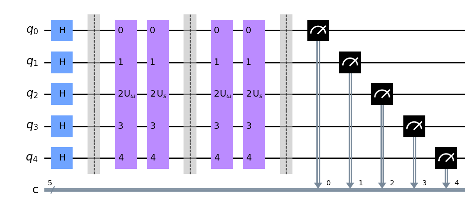
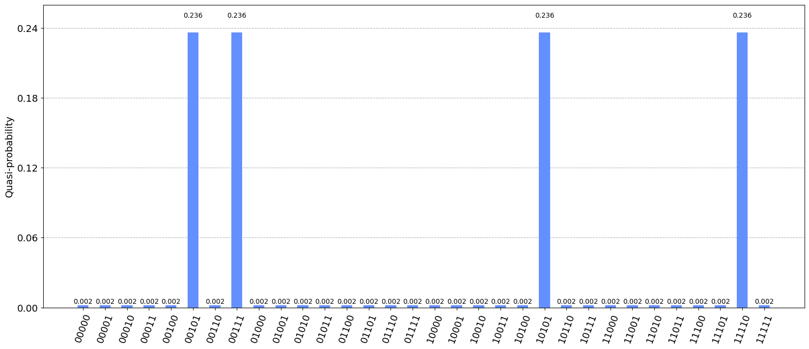
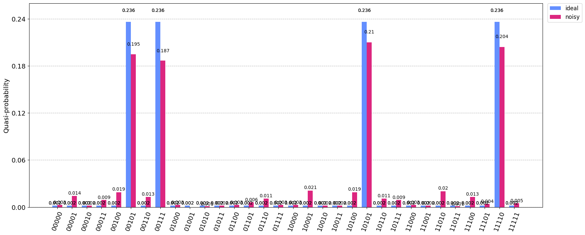

A Womanium Global Media Project Initiative
Overview
Previously, we discussed the theoritical aspects of Quantum Collision Finding and the BHT algorithm. We now try to implement in the BHT algorithm using Qiskit for small functions. We’ll create a class for this and explain it step-by-step. First let’s import essential packages.
import numpy as np
from qiskit import QuantumCircuit
from qiskit.primitives import Sampler
from qiskit.tools.visualization import plot_histogram
from qiskit.algorithms.algorithm_result import AlgorithmResult
from qiskit.providers.ibmq import IBMQ
from qiskit.providers.aer import AerSimulator
from qiskit_ibm_runtime import QiskitRuntimeService, Session, Options
from qiskit_ibm_runtime import Sampler as RuntimeSampler
from qiskit_aer.noise import NoiseModel
from qiskit.algorithms.algorithm_result import AlgorithmResult
seed = 42
np.random.seed(seed)
Implementation
The BHT class below implements the BHT algorithm. The class takes a Qiskit Sampler object sampler, the n-bit hash function fn and the input size n. Most of the algorithm is present in the solve function of the class.
class BHT:
def __init__(self, sampler, fn, n):
"""
Initialize the BHT algorithm class
Args:
sampler (Sampler): Qiskit's Sampler Object
fn (np.ndarray): Function whose collisions we want to find
represented by a numpy array.
n (int): Maximum length of a input/output
"""
self.n = n
self.fn = fn
self.N = 2**n # Total number of inputs (Domain)
self.sampler = sampler
def _search(self, x, F_x):
"""
Check whether there exists x_0 ∈ K so that (x_0, F(x)) ∈ L but x != x_0.
Since L is sorted by hashes we use binary search on L.
Args:
x (int): Input x
y (int): Value of the function evaluated at x
Returns:
index (int): Returns the index of x_0 if found, else -1
"""
low = 0
high = self.k - 1
while low <= high:
mid = (low + high) // 2
x0 = self.L[mid][0]
if (F_x == self.L[mid][1]) and (x != x0):
return x0
elif self.L[mid][1] < F_x:
low = mid + 1
else:
high = mid - 1
return -1
def _H_mat(self):
"""
Creates a unitary matrix for H: X -> {0, 1}
Returns:
qc (Gate): Gate representing the H matrix
"""
size = 2**self.n # Since |X| = n, we need n+1 qubits
U = np.zeros((size, size)) # Initialize the matrix
for x in range(size):
y = self.fn[x] # Compute the function of x
x0 = self._search(x, y)
if x0 == -1:
U[x][x] = 1
else:
U[x][x] = -1 # Phase flip if such x0 exists
qc = QuantumCircuit(self.n)
qc.unitary(U, range(self.n))
oracle = qc.to_gate()
oracle.name = 'U$_\omega$'
return oracle
def _diffuser(self, nqubits):
"""
Diffuser for Grover's algorithm
Returns:
U_s (Gate): Diffuser circuit.
"""
qc = QuantumCircuit(nqubits)
for qubit in range(nqubits):
qc.h(qubit)
for qubit in range(nqubits):
qc.x(qubit)
qc.h(nqubits - 1)
qc.mct(list(range(nqubits - 1)),
nqubits - 1) # multi-controlled-toffoli
qc.h(nqubits - 1)
for qubit in range(nqubits):
qc.x(qubit)
for qubit in range(nqubits):
qc.h(qubit)
U_s = qc.to_gate()
U_s.name = "U$_s$"
return U_s
def construct_circuit(self):
"""
Construction of the Grover's circuit.
Returns:
qc (QuantumCircuit): Grover's circuit.
"""
qc = QuantumCircuit(self.n, self.n)
qc.h(range(self.n))
qc.barrier()
oracle = self._H_mat() # Oracle H of Grover(H,1)
self.num_iterations = int(np.sqrt(self.N / self.k))
for i in range(self.num_iterations):
qc.append(oracle, range(self.n))
qc.append(self._diffuser(self.n), range(self.n))
qc.barrier()
qc.measure(range(self.n), range(self.n))
return qc
def find_collisions(self, x):
"""
Finds collisions from the result of Grover's circuit execution.
Returns:
collisions (List[tuple]): A list of three element tuple (a, b, c)
such that fn[a] = f[b] = c.
"""
collisions = []
for i in x:
y = self.fn[i]
x0 = self._search(i, y)
if x0 != -1:
collisions.append((x0, i, y))
return collisions
def solve(self):
"""
Performs the BHT algorithm.
Returns:
collisions (List[tuple]): A list of three element tuple (a, b, c)
such that fn[a] = f[b] = c.
"""
X = range(self.N) # Domain of function
# Step 1.1:
# Start by selecting an arbitrary subset K ⊆ X of cardinality k = 2^(n/3).
self.k = int(np.ceil(np.cbrt(self.N)))
K = np.random.choice(X, self.k, replace=False)
# Create a table L where each item in L holds a unique pair
# (x, F(x)) with x ∈ K
self.L = [(i, self.fn[i]) for i in K]
# Step 1.2: Sort L according to the second entry in each item of L.
self.L.sort(key=lambda x: x[1])
# Step 1.3:
# Verify whether L contains any collisions, meaning check if there
# are distinct elements (x_0, F(x_0)), (x_1, F(x_1)) ∈ L
# such that F(x_0) = F(x_1).
collisions = []
result = AlgorithmResult()
flag = False
for i in range(1, self.k):
if self.L[i - 1][1] == self.L[i][1]: # Hashes are equal
print("Collision Found")
collisions.append(
(self.L[i - 1][0], self.L[i][0], self.L[i][1]))
flag = True
break
if flag == True:
# If so, proceed to Step 2.3:
# Output the collision set {x_0, x_1}.
result.collisions = collisions
result.classical = True
return result
# If not, the 2^(n/3) pairs of L are stored in qRAM.
# Construct the circuit for the Grover's algorithm
qc = self.construct_circuit()
# Step 2.1: Calculate x1 = Grover(H, 1)
# Note that since multiple collisions exists
# x1 denotes one such solution
# but after executing the circuit we can get
# more than one x1.
job = self.sampler.run(qc)
res = job.result()
quasi_dist = res.quasi_dists[0]
probs = quasi_dist.binary_probabilities()
probs = dict(sorted(probs.items(), reverse=True, key=lambda i: i[1]))
prob_keys = list(probs.keys())
x = [int(i, 2) for i in prob_keys]
# Step 2.2: Search (x0, F(x1)) ∈ L
collisions = self.find_collisions(x)
# Step 2.3: Output the collision set {x_0, x_1}
result.iterations = self.num_iterations
result.probs = probs
result.circuit = qc
result.collisions = collisions
result.classical = False
return result
We also define a solve_classical function which classically compute the collisions for the given function fn.
def solve_classical(fn):
"""
Classically computes the collisions in the function `fn`.
Args:
fn (np.ndarray): Function whose collisions we want to find represented
by a numpy array.
Returns:
collisions (List[tuple]): A list of three element tuple (a, b, c)
such that fn[a] = f[b] = c.
"""
unique_elements, inverse, counts = np.unique(fn,
return_inverse=True,
return_counts=True)
duplicate_indices = np.where(counts > 1)[0]
collisions = []
for idx in duplicate_indices:
indices = np.where(inverse == idx)[0]
for i, j in zip(indices[:-1], indices[1:]):
collisions.append((i, j, unique_elements[idx]))
return collisions
Ideal Simulation
We now test the BHT algorithm with a 5-bit function i.e. n = 5.
n = 5 # Maximum length of a input/output
N = 2**n # Total number of inputs (Domain)
X = range(N) # Domain of hash function
# Function
func = np.array([np.random.randint(low=0, high=N) for i in X])
func
array([ 6, 19, 28, 14, 10, 7, 28, 20, 6, 25, 18, 22, 10, 10, 23, 20, 3,
7, 23, 2, 21, 20, 1, 23, 11, 29, 5, 1, 31, 27, 20, 0])
First we try to find the collisions classically.
collisions = solve_classical(func)
collisions
[(22, 27, 1),
(0, 8, 6),
(5, 17, 7),
(4, 12, 10),
(12, 13, 10),
(7, 15, 20),
(15, 21, 20),
(21, 30, 20),
(14, 18, 23),
(18, 23, 23),
(2, 6, 28)]
Now we use the BHT algorithm to find collisions in the function.
np.random.seed(seed)
sampler = Sampler()
bht = BHT(sampler, func, n)
result = bht.solve() # Find collisions
print(result)
{ 'circuit': <qiskit.circuit.quantumcircuit.QuantumCircuit object at 0x7f45ca965580>,
'classical': False,
'collisions': [(17, 5, 7), (15, 21, 20), (15, 7, 20), (15, 30, 20)],
'iterations': 2,
'probs': { '00000': 0.001953125,
'00001': 0.001953125,
'00010': 0.001953125,
'00011': 0.001953125,
'00100': 0.001953125,
'00101': 0.2363281249999989,
'00110': 0.001953125,
'00111': 0.2363281249999988,
'01000': 0.001953125,
'01001': 0.001953125,
'01010': 0.001953125,
'01011': 0.001953125,
'01100': 0.001953125,
'01101': 0.001953125,
'01110': 0.001953125,
'01111': 0.001953125,
'10000': 0.001953125,
'10001': 0.001953125,
'10010': 0.001953125,
'10011': 0.001953125,
'10100': 0.001953125,
'10101': 0.2363281249999989,
'10110': 0.001953125,
'10111': 0.001953125,
'11000': 0.001953125,
'11001': 0.001953125,
'11010': 0.001953125,
'11011': 0.001953125,
'11100': 0.001953125,
'11101': 0.001953125,
'11110': 0.2363281249999988,
'11111': 0.001953125}}
We can see that the algorithm halted successfully and below is the quantum circuit used for finding the collisions. We can see that it uses 2 iterations of the Grover’s algorithm.
result.circuit.draw('mpl')

From the histogram, we can see that there are 4 collisions.
plot_histogram(result.probs, figsize=(20, 8))

result.collisions
[(17, 5, 7), (15, 21, 20), (15, 7, 20), (15, 30, 20)]
Hurray! We can observe that the collisions found by the BHT algorithm are also present in the classical solutions.
Noisy Simulation
Now we test the algorithm with a noisy simulator. The noisy simulator is based on the ibmq_manila device.
service = QiskitRuntimeService(channel="ibm_quantum")
backend = service.backend("ibmq_qasm_simulator")
provider = IBMQ.load_account()
real_backend = provider.get_backend('ibmq_manila')
backend_sim = AerSimulator.from_backend(real_backend)
noise_model = NoiseModel.from_backend(backend_sim)
# Set options to include the noise model
options = Options()
options.simulator = {
"noise_model": noise_model,
"basis_gates": backend.configuration().basis_gates,
"coupling_map": backend.configuration().coupling_map,
"seed_simulator": seed
}
# Set number of shots, optimization_level and resilience_level
options.execution.shots = 1000
options.optimization_level = 0
options.resilience_level = 0
np.random.seed(seed)
with Session(backend=backend, max_time="1h"):
rt_sampler = RuntimeSampler(backend=backend, options=options)
bht = BHT(rt_sampler, func, n)
noisy_result = bht.solve()
print(noisy_result)
{ 'circuit': <qiskit.circuit.quantumcircuit.QuantumCircuit object at 0x7f45c0d0f430>,
'classical': False,
'collisions': [(15, 21, 20), (15, 30, 20), (17, 5, 7), (15, 7, 20)],
'iterations': 2,
'probs': { '00000': 0.003,
'00001': 0.014,
'00010': 0.002,
'00011': 0.009,
'00100': 0.019,
'00101': 0.195,
'00110': 0.013,
'00111': 0.187,
'01000': 0.003,
'01010': 0.001,
'01011': 0.002,
'01100': 0.003,
'01101': 0.006,
'01110': 0.011,
'01111': 0.003,
'10000': 0.003,
'10001': 0.021,
'10010': 0.002,
'10011': 0.002,
'10100': 0.019,
'10101': 0.21,
'10110': 0.011,
'10111': 0.009,
'11000': 0.003,
'11001': 0.002,
'11010': 0.02,
'11011': 0.001,
'11100': 0.013,
'11101': 0.004,
'11110': 0.204,
'11111': 0.005}}
plot_histogram([result.probs, noisy_result.probs],
legend=['ideal', 'noisy'],
figsize=(20, 8))

noisy_result.collisions
[(15, 21, 20), (15, 30, 20), (17, 5, 7), (15, 7, 20)]
From the histogram, we can observe that the counts for the 4 collisions are slightly decreased but still prominent and the collisions found by the BHT algorithm are still present in the classical solutions.